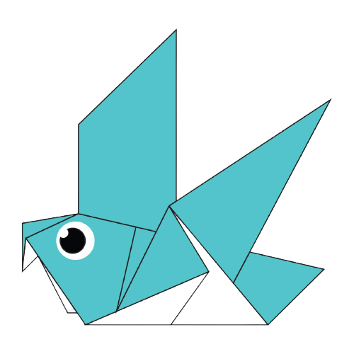
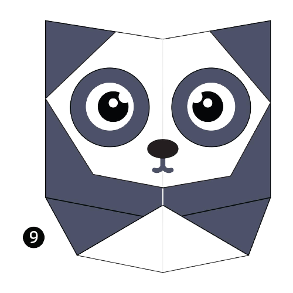

Interesting Facts About Chameleon
Interesting Facts About Chameleon

Interesting Facts About Pigeon
Pigeons are incredibly complex and intelligent animals.
Pigeons are renowned for their outstanding navigational abilities.
Pigeons have excellent hearing abilities.
 Interesting Facts About Camel
Interesting Facts About Camel
 Interesting Facts About Teddy-bear
Interesting Facts About Teddy-bear

Interesting Facts About Pandas
Pandas go from pink to white and black(or brown).
Pandas are"lazy" -- eating and sleeping make their day.
An adult can eat 12-38 kilos of bamboo per day .
 Interesting Facts About Cicada
Interesting Facts About Cicada